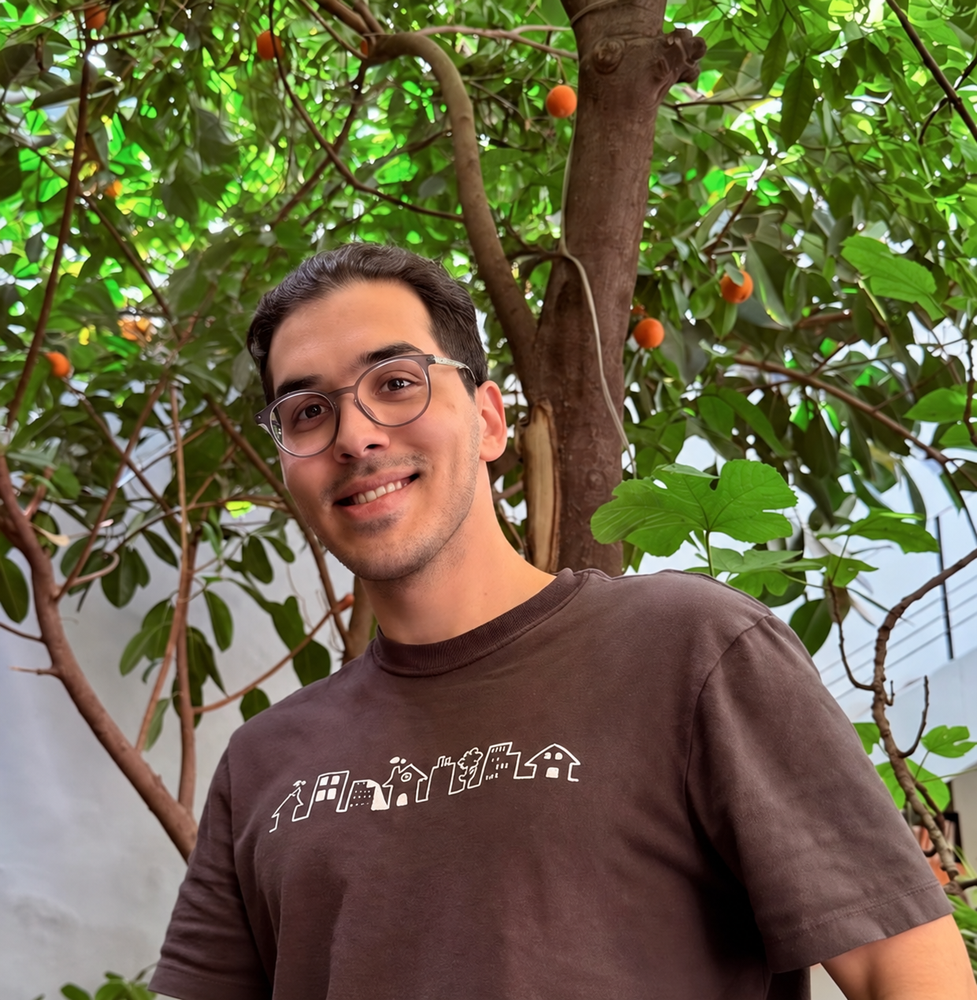

MIT Laboratory for Information & Decision Systems (LIDS)
Aug 2026–PresentResearch Staff
Cambridge, MA
Advisor: Prof. Marzyeh Ghassemi
I’m a research staff member at MIT’s Laboratory for Information & Decision Systems (LIDS), working with Prof. Marzyeh Ghassemi.
My research focuses on human-centered AI, with an emphasis on alignment and developing trustworthy language models. I’m also interested in the intersection between AI and human behavior, including how models represent diverse human perspectives and how we can use AI to support decision-making in high-stakes domains such as healthcare.
Previously, I worked with Prof. Serina Chang at Berkeley Artificial Intelligence Research (BAIR) on how language models can be steered to reflect diverse human perspectives and how they represent public opinion, and with Prof. Jure Leskovec at the Stanford Artificial Intelligence Lab (SAIL) on estimating the health impacts of Long COVID. I completed my B.A. in Computer Science at UC Berkeley.

* denotes equal contribution
Preprint
We unify activation steering in a framework that separates the estimand from the estimator, clarifies the assumptions underlying existing methods, and extends steering from binary labels to continuous outcomes. For trustworthy alignment, we reduce total-variation error by an average of 16.5% across nine truthfulness benchmarks and six language models, and improve AxBench’s overall concept-steering score by 8.0%, compared with contrastive activation addition.
Accepted in PNAS
We study which long-term health effects can be attributed to COVID-19, rather than bias in who gets tested. Using 14.4 billion claims from 244.7 million patients, our test-based design finds an order of magnitude fewer attributable effects than conventional analyses, with clinically significant effects persisting for up to one year.
ICLR 2026
We ask what LLMs know about human opinions and where that knowledge is stored. Across 22 demographic groups, probing internal activations improves alignment with human answer distributions by 52–66% over next-token predictions. We locate the discrepancy in the final unembedding layer and identify attention-head features that can causally steer outputs toward different groups.
ACL 2025 (main)
We ask whether survey-based fine-tuning helps LLMs predict how opinions vary across populations. We introduce SubPOP, with 3,362 questions and 70,000 subpopulation-response pairs, and reduce the gap between predicted and human response distributions by up to 46% over prompting baselines. These improvements generalize to unseen survey topics, survey families, and subpopulations.
Research Staff
Cambridge, MA
Advisor: Prof. Marzyeh Ghassemi

Research Associate
Berkeley, CA
Advisor: Prof. Serina Chang
Research Staff
Stanford, CA
Advisor: Prof. Jure Leskovec

Research Assistant
Berkeley, CA
Advisor: Prof. Amir Kermani
We ask whether assistants remember users’ long-term preferences and respect them when immediate requests conflict. We introduce PrefDriftBench, a 2,337-example benchmark, and find that preference adherence drops from 54% to 22% as intervening dialogues grow from 300 to 5,000 tokens. Under conflict, 69.5% of responses follow short-term requests, compared with 15.0% for long-term preferences.
We study how OthelloGPT builds an internal world model from move sequences. Comparing sparse autoencoders with linear probes, we uncover a progression from static board structure in early layers to dynamic tile-state features in later layers. SAEs reveal more distinctive compositional representations, including features associated with tile stability, while probes mainly identify predictive correlations.